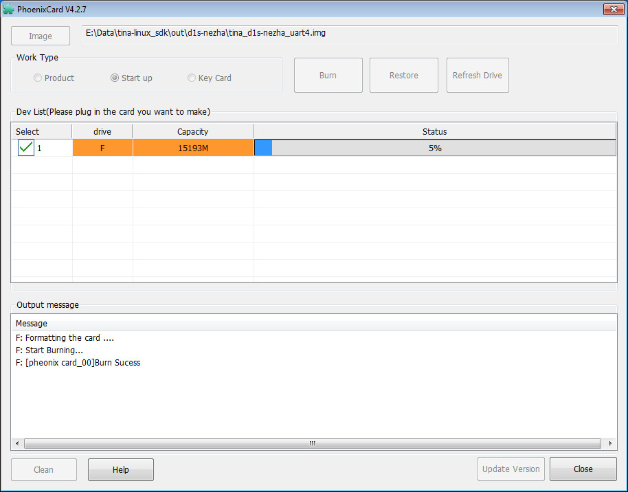
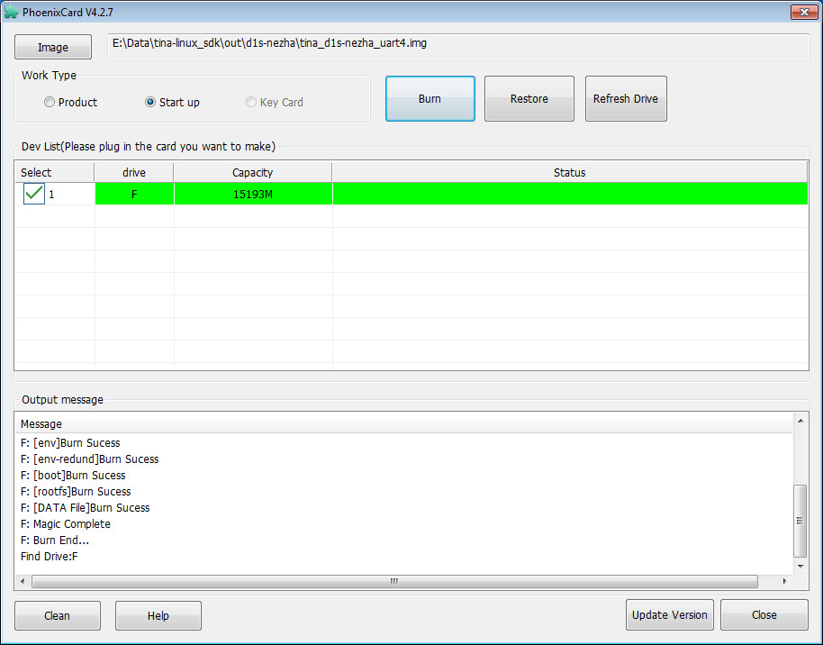
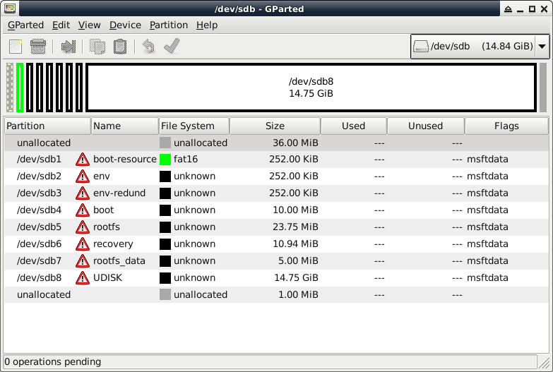
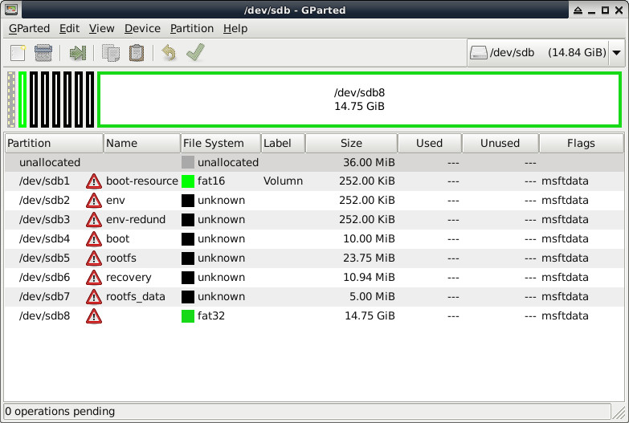

感謝lovexulu的協助，提供Tina-Linux的移植結果給司徒參考，由於Tina-Linux下載相當費時也比較麻煩，因此，司徒將其搬遷到GitHub，編譯步驟如下：
$ cd
$ wget https://github.com/steward-fu/website/releases/download/gaviar/tina-linux_sdk-f133_gaviar_sdk-v2.1.zip
$ unzip tina-linux_sdk-f133_gaviar_sdk-v2.1.zip
$ cd tina-linux_sdk
$ wget https://github.com/steward-fu/archives/releases/download/f133/tina-linux_sdk_dl.7z.001
$ wget https://github.com/steward-fu/archives/releases/download/f133/tina-linux_sdk_dl.7z.002
$ wget https://github.com/steward-fu/archives/releases/download/f133/tina-linux_sdk_toolchain.tar.gz
$ tar xvf https://github.com/steward-fu/archives/releases/download/f133/tina-linux_sdk_toolchain.tar.gz
$ 7za x https://github.com/steward-fu/archives/releases/download/f133/tina-linux_sdk_dl.7z.001
$ source ./build/envsetup.sh
$ lunch
You're building on Linux
Lunch menu... pick a combo:
1. d1-h_nezha_min-tina
2. d1-h_nezha-tina
3. d1s_nezha-tina
Which would you like? [Default d1s_nezha]:3
$ make
$ pack
tina-linux_sdk/out/d1s-nezha/tina_d1s-nezha_uart4.img
pack finish
BOOT0 位於：out/d1s-nezha/image/boot0_sdcard.fex (8KB 偏移位置)
$ sudo dd if=out/d1s-nezha/image/boot0_sdcard.fex of=/dev/sdX bs=1024 seek=8
OpenSBI、U-Boot 位於：out/d1s-nezha/image/boot_package.fex
$ sudo dd if=out/d1s-nezha/image/boot_package.fex of=/dev/sdX bs=1024 seek=16400
燒錄步驟：
1. 下載https://github.com/steward-fu/website/releases/download/gaviar/PhoenixCardv4.2.7.7z並且解壓縮
2. 執行PhoenixCard.exe
3. 選擇好Image、Start up後，按下Burn開始燒錄




$ adb devices
* daemon not running; starting now at tcp:5037
* daemon started successfully
List of devices attached
20080411 device
$ adb shell
BusyBox v1.27.2 () built-in shell (ash)
------run profile file-----
_____ _ __ _
|_ _||_| ___ _ _ | | |_| ___ _ _ _ _
| | _ | || | | |__ | || || | ||_'_|
| | | || | || _ | |_____||_||_|_||___||_,_|
|_| |_||_|_||_|_| Tina is Based on OpenWrt!
----------------------------------------------
Tina Linux (Neptune, 61CC0487)
----------------------------------------------
nodev debugfs
root@TinaLinux:/#
root@TinaLinux:/# mount /dev/mmcblk0p8 /mnt/UDISK/
root@TinaLinux:/# amixer sset 'Headphone volume' 100%
Simple mixer control 'Headphone volume',0
Capabilities: volume volume-joined
Playback channels: Mono
Capture channels: Mono
Limits: 0 - 7
Mono: 7 [100%]
root@TinaLinux:/# aplay /mnt/UDISK/ok.wav
Playing WAVE '/mnt/UDISK/ok.wav' : Signed 16 bit Little Endian, Rate 11025 Hz, Mono